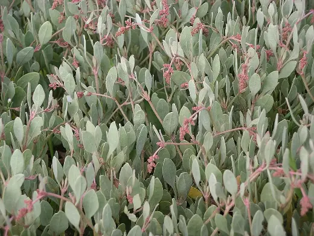

Wild green · Apr–Oct
Sea purslane
Atriplex portulacoides
Also called Sea purslane
Sea purslane is a wild green you can forage from April to October in Leinster and Munster. Silvery, fleshy, oval leaves on low shrubs at salt marsh creek edges. Salty and crunchy.

When is sea purslane in season in Ireland?
Sea purslane is usually in season April to October. Timing shifts with weather, latitude and altitude.
Where does sea purslane grow in Ireland?
Sea purslane grows in Carlow, Clare, Cork, Dublin, Kerry, Kildare, Kilkenny, Laois, Limerick, Longford, Louth, Meath, Offaly, Tipperary, Waterford, Westmeath, Wexford, Wicklow. Regions: Leinster, Munster.
How do you recognise sea purslane?
Silvery, fleshy, oval leaves on low shrubs at salt marsh creek edges. Salty and crunchy.
How do you harvest sea purslane?
Pick the tender leaf tips at low tide.
How do you eat sea purslane?
Raw, or fried in butter with fish.
How do you store sea purslane?
Best fresh.
What is sea purslane good for?
Iron & calcium.